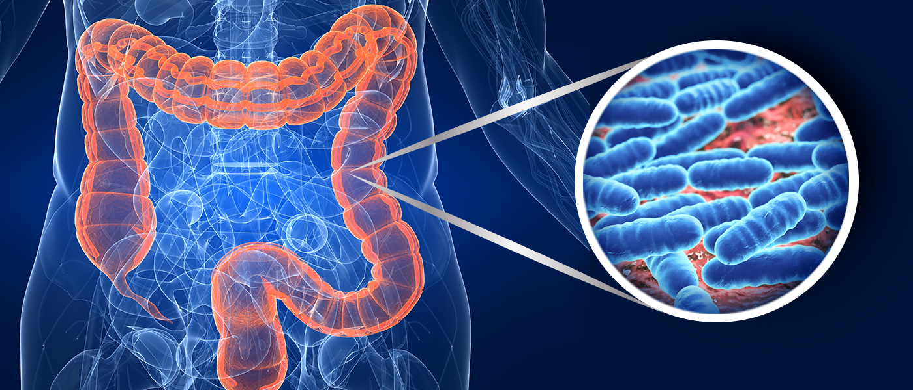

Gases, dolores intestinales, abdomen hinchado y dificultades para evacuar, ¿todos estos riesgos con frecuentes crisis de hemorroides y sangrado anal? Estos son solo algunos de los síntomas que he vivido durante gran parte de mi vida, Si sufres de uno estos síntomas o todos ellos, lee atentamente este mensaje urgente.
Recientemente, científicos de la Universidad de Michigan descubrieron la verdadera causa de los problemas intestinales, y contrario a lo que piensas, no tiene nada que ver con la ingesta de fibras, beber más agua o tomar medicamentos.
Sino más bien, con un microbio azul muy cómun en personas mayores de 40 ãnos... Este micóbrio azul conocido como vampiro intestinal
SE TRATA DE UN SER QUE DEVORA LA MUCOSA INTESTINAL, DEJANDO EL ORGANO RESECO E IMPIDIENDO QUE LAS HECES PUEDAN DESLIZARSE ADECUADAMENTE.
Con el paso de los años, esta suciedad se acumula, llevando a procesos inflamatorios, dolores intestinales, infecciones e incluso dificultades de enfoque, concentración, y afectando también la calidad del sueño. En el peor de los casos, el paciente puede desarrollar demencia debido al uso de laxantes, según estudios de la Universidad de Harvard, o incluso cáncer de colon.
Observa esta imagen que muestra los 7 tipos de heces:

El indicador de una buena digestión estaría en la representación de las heces de los tipos 3 y 4 en la imagen de arriba.
Ahora, si tus heces tienen otra consistencia, y si pasas más de 2 días sin evacuar y, incluso cuando vas al baño, la evacuación es incompleta, requiere mucho esfuerzo y es dolorosa.
Tengo una advertencia para ti: resuelve inmediatamente este problema antes de que estos vampiros intestinales dañen aún más las paredes de tu intestino.
PERO,COMO ELIMINAR ESTE VAMPIRO INTESTINAL Y PONER FIN AL ESTREÑIMIENTO?
Por eso, Los mismos científicos de Michigan han revelado un método casero y natural que se realiza todas las mañanas con solo 1 minuto de tu día que se considera el futuro para acabar con la hinchazón, el dolor abdominal y la diarrea y elimina todos estos vampiros intestinales.
Dejando tu intestino limpio y lubricado, lo que te permitirá poner fin a todos tus problemas intestinales que te afectan desde hace tanto tiempo.
Para ver todo el paso a paso de este método natural rápido y fácil que yo mismo usé, haz clic ahora mismo en el botón a continuación y mira el video gratuito que te explica todo lo que necesitas saber para poner fin a tus dolores abdominales, gases, estreñimiento. Adelante, haz clic ahora mismo, te espero al otro lado.